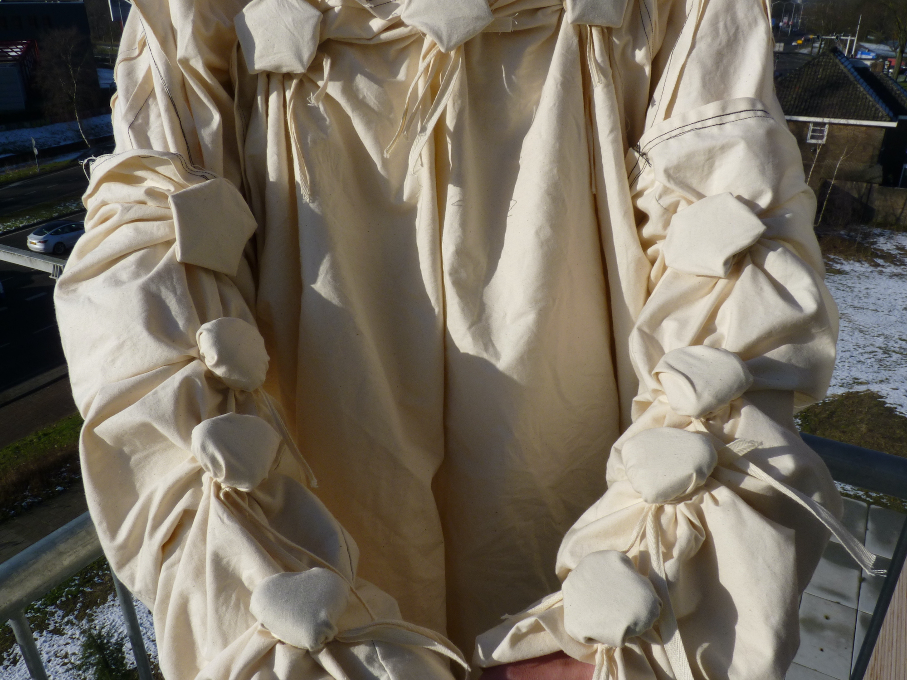
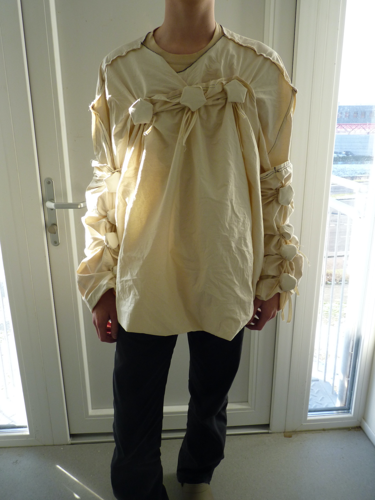
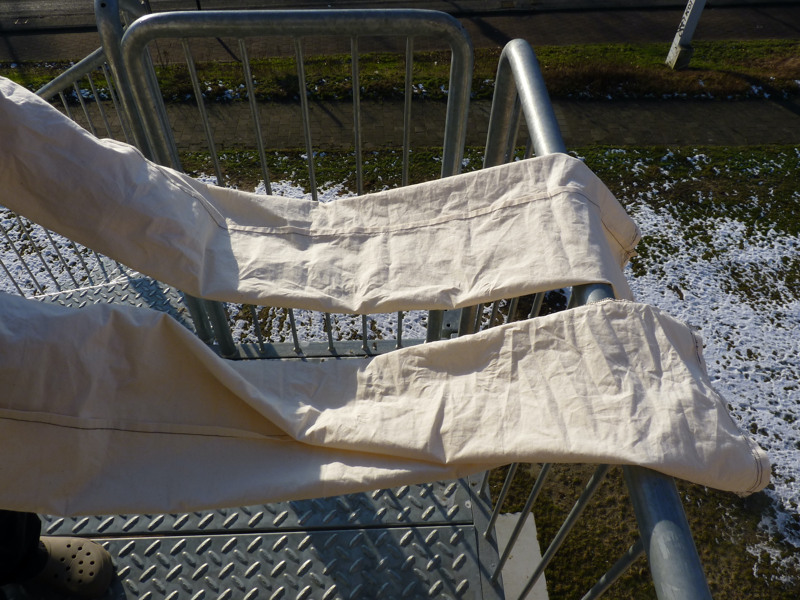
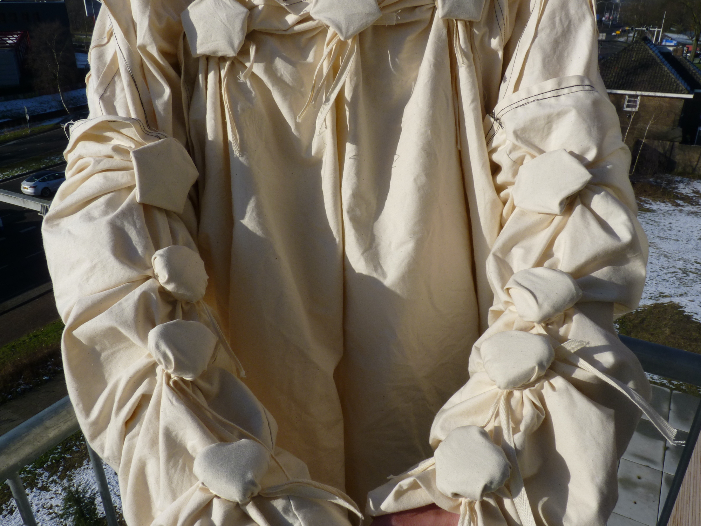
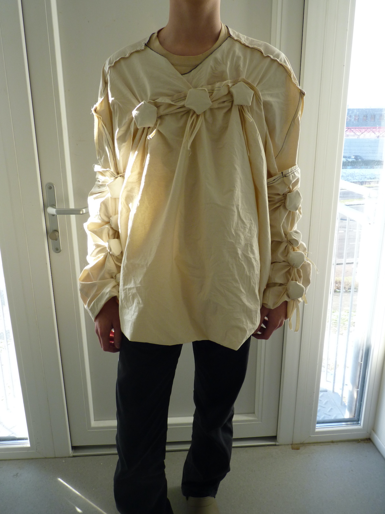
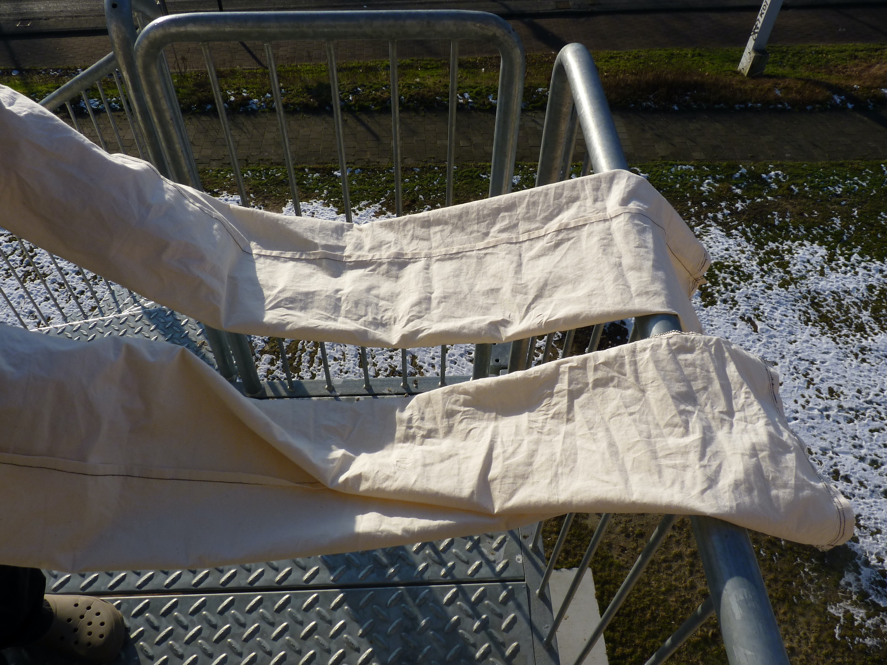

The garment is one size fits all and can take different forms and shapes. The fabric is fastened using loops that constrain it around 3d printed modular charms. The starting point of this project was my distaste for 3d printed fashion, which I tried to reappropriate to move away from the textures and aesthetics the 3d printed fashion scene is an echo chamber for.
3d printers promised to democratise plastic fabrication techniques by making them available to the masses. However, producing at a high frequency is super inefficient as the printing is incredibly slow and the material is expensive, combined with a high failure rate. Clothing is also very difficult to print, especially with more financially accessible 3d printers.
3d printed fashion in the spotlight now often is a proxy to show off new technology which is only available to a select group of people. It is not open source, or replicable by the average 3d printer owner.
This project is an attempt at using 3d printing without letting the medium inform the project's aesthetics. There are 3 main parts, the garment itself, the 3d printed charms and the ties. Here you can download the 3d models for the charms in a zip folder. the sizes are not to scale, so if you want to print some, play around and see what suits you!
projects
home
{kind=link}